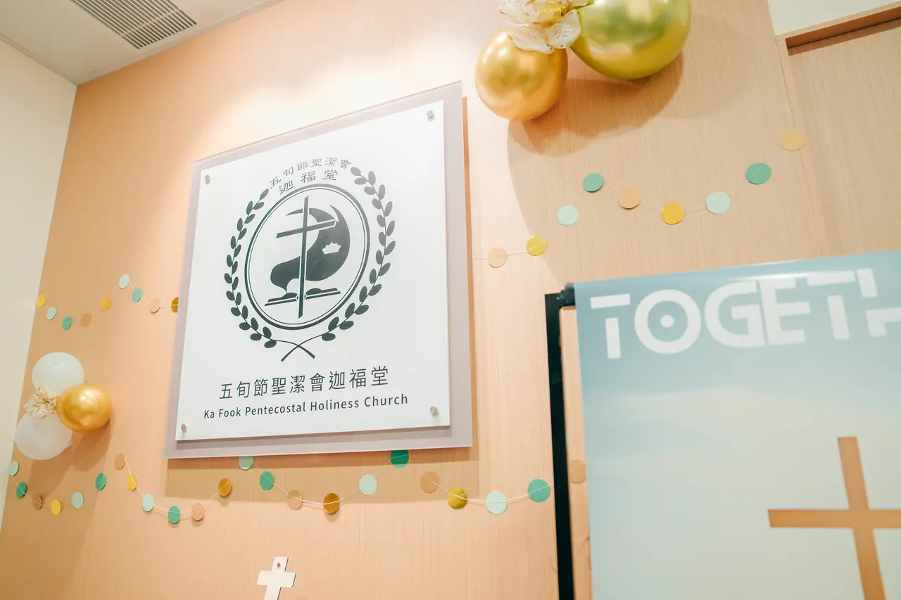
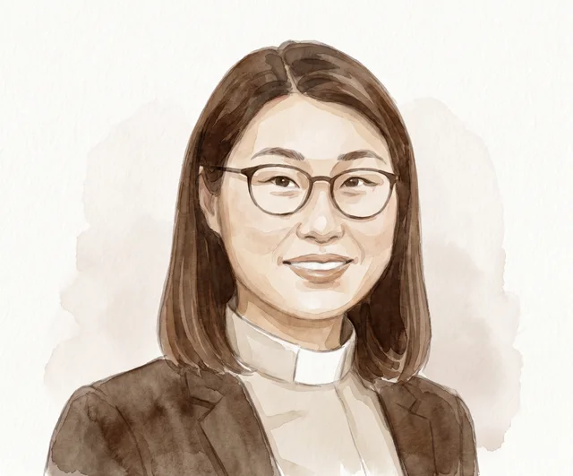
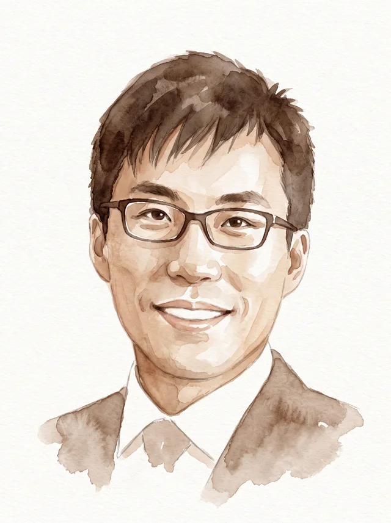
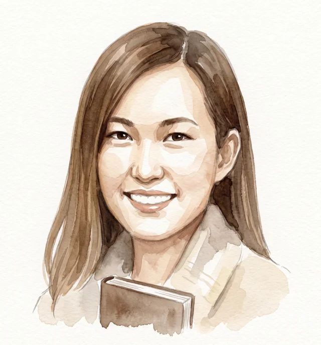
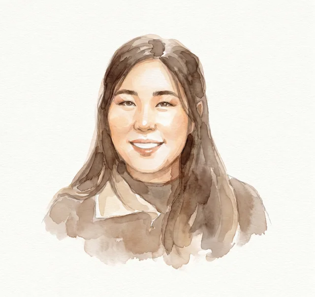
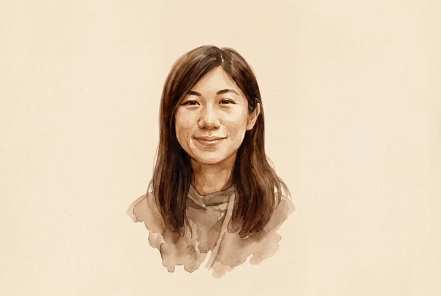

異象
在基督裡，建立生命的家
扎根觀塘，共建神家，讓不同年齡、不同生命階段的人，在群體中經歷福音與愛。

扎根於真理，在愛中彼此結連。
在觀塘，一起建造屬靈的家。
五旬節聖潔會迦福堂是一個在基督裡彼此結連的群體。我們同心敬拜，在真理中成長，並在日常生活中實踐愛與服事。
扎根觀塘，共建神家，讓不同年齡、不同生命階段的人，在群體中經歷福音與愛。
以基督的愛接觸社區，藉聖經的教導建立門徒，在同行與服事中活出信仰。
扎根真道，同心敬拜，彼此關顧；在教會、家庭、校園及職場，成為愛的見證。
在人生的每一個階段，都有一起走信心路的同行者。
在恩典中成長
關顧退休人士及弟兄姊妹的父母，藉查經、福音聚會、專題分享與探訪，建立彼此相愛的群體。
在承擔中守望
彼此分享、激勵與代禱，在照顧家庭、面對退休等階段互相扶持，也將福音帶到金齡人士與長者當中。
在生活中實踐
申命、因愛、葡萄園、承命、傳愛、恩悅、希臨、恩溢小組
在工作與家庭中互相守望，藉查經、分享與事奉，一同實踐信仰。
在轉變中同行
由文憑試、大專走向職場，在新階段繼續建立信仰。
在成長中扎根
使命之家、揚光之家
透過團契生活、校園及社區接觸，陪伴少年人認識基督，學習愛主愛人。
在活動中結連
歡迎不同年齡人士參與，對象不限於大專生；除板棋外，亦透過運動等多元活動形式與新朋友建立關係，在互動中分享信仰。
想認識適合你的團契？讓我們與你一起找到同行的群體。
聯絡我們
主任牧師
自我介紹內容待補充。

牧師
自我介紹內容待補充。

幹事
自我介紹內容待補充。

幹事
自我介紹內容待補充。

神學生
自我介紹內容待補充。
從今天回望，每一步，
都有神的帶領與家人的同行。
將鼠標移到項目上，或點選項目，可查看詳細經過。
1966年借用慈雲山一間醫務所作聚會地點，1968年正式成立「五旬節聖潔會慈雲山堂」，初期聚會人數只有十多人。
遷入五旬節聖潔會第二永光學校，以學校作為福音工作的重要平台。七十至八十年代以小學生佈道為主要發展方向；至八十年代末，聚會人數增長至接近二百人，教會經濟亦漸趨穩定。
因應慈雲山區重建，教會成立「建堂委員會」，由等待政府安置轉向自行置業。1995年購入九龍城嘉福閣閣樓單位；1996年正式進駐九龍城，並因地域遷移改名為「五旬節聖潔會迦福堂」。
原有高中團契彼得團及初中團契約翰團，重組為大專團契「彼得之家」，以及少年團「Teen家」及「豐盛之家」，確立以學生工作作為福音發展主幹。
因聚會空間不敷應用，遷往觀塘道410號觀點中心12樓，展開觀塘區的長遠服侍。
成立雅比斯之家並推行小組牧養；拓展大專團契安得烈團，由彼得之家分為雲彩之家、懷道之家、恩火之家及傳光之家；少年團分為錫安之家、甘霖之家、曙光之家、薪火之家及基石之家。
2007年與東華三院呂潤財紀念中學合辦香港基督少年軍，開展將軍澳入校工作。2008年成立本堂第一支隊工「恩冕籃球隊」。
成立隊工「棋匯坊」，以板棋作為傳福音媒介，藉活動與新朋友建立關係。
於將軍澳慧安商場開辦「諾知原教育中心」（Promised Land），以補習班及興趣班接觸區內學生。同年於迦密主恩中學開展學生信仰小組，並首次舉辦柬埔寨短宣團。
2013年成立傳恩之家，作為中學文憑試考生及大專生的牧養群體；同年獲教育局區本計劃資助，與高雷中學合作舉辦課程。至2016年已與觀塘及將軍澳區五所中學建立合作，包括高雷中學、新生命教育協會呂郭碧鳳中學、聖安當女書院、東華三院呂潤財紀念中學及迦密主恩中學，透過學術課程、功課輔導及義工訓練等接觸逾百名中學生。
成立活泉之家，與傳恩之家合組成「提摩太團」，聚焦大專生活中的信仰挑戰與大專校園福音工作。
安得烈團重組為六個小組：申命、因愛、葡萄園、傳愛、恩悅、承命，其中申命及因愛為夫婦小組，其餘為職青小組；少年團重組為揚光之家及使命之家。同年11月購入觀塘成業街10號電訊一代廣場23樓C2室，並啟動「天國小錢」建堂捐獻計劃。
推動「全堂合一佈道運動」及相關堂慶活動，總結多年來的組織發展與福音外展。
2024年啟動「天國小錢2025」建堂捐獻計劃；2025年購置新堂物業；2026年1月25日舉行新堂啟用與獻堂感恩崇拜。
不用擔心不熟悉教會，歡迎帶著你的問題來。
我們會一同唱詩歌敬拜、同心禱告，並聆聽牧者按聖經分享信息；透過詩歌與真道親近神，彼此祝福。不用擔心不熟悉流程，現場均有投影及同工協助。
約1小時30分鐘，包括詩歌敬拜和講道。
沒有特別要求，穿您覺得舒適的衣服就好。請避免衣著暴露，也不適宜穿著拖鞋。
歡迎！週日午堂崇拜（11:15）同時設有兒童崇拜，讓小朋友在適合他們的群體中敬拜和學習聖經；禮堂亦設有直播間，方便家長攜同幼兒參與崇拜。若您的孩子已踏入青少年階段，我們也設有青少年崇拜（週六 17:30–18:30，主要對象為中學及大專學生）。
兒童崇拜由幼稚園 K1 開始，適合幼稚園及小學階段的小朋友參與（於週日 11:15 與午堂崇拜同時舉行）。
不需要。奉獻是在明白奉獻意義的情況下自願的回應，並非必須。